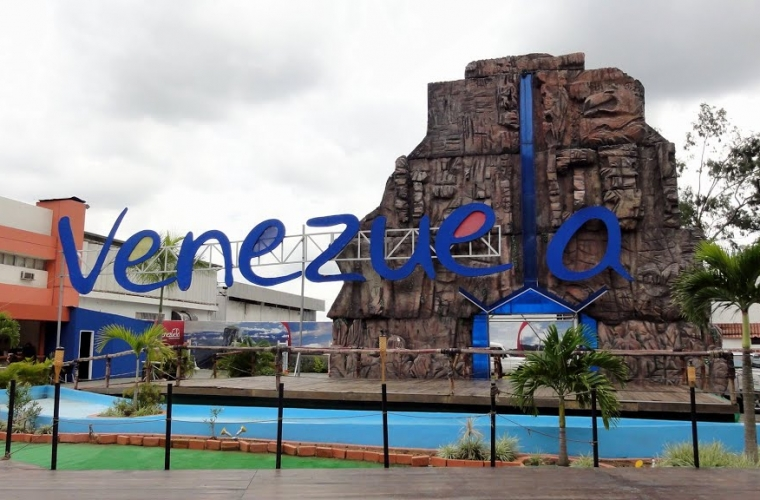

Viajando ando y disfrutando...


Mi Venezuela AMADA

Hoy me quiero regalar de cumpleaños un viaje virtual a mi bella tierra...hoy cumplo 35 años, de los cuales 34 los viví en el mejor país del mundo: VENEZUELA!!!!
Agradezco infinitamente haber nacido allí, haber dedicado tiempo en conocer tan bella tierra... A veces la tristeza me embarga, porque hoy estoy lejos, quisiera simplemente dejar todo y volver, pero sería una locura. Entonces decidí ir a mis recuerdos porque "Recordar es Vivir"